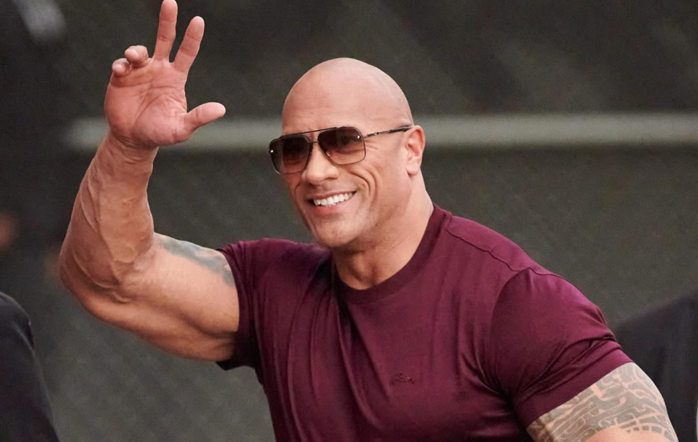
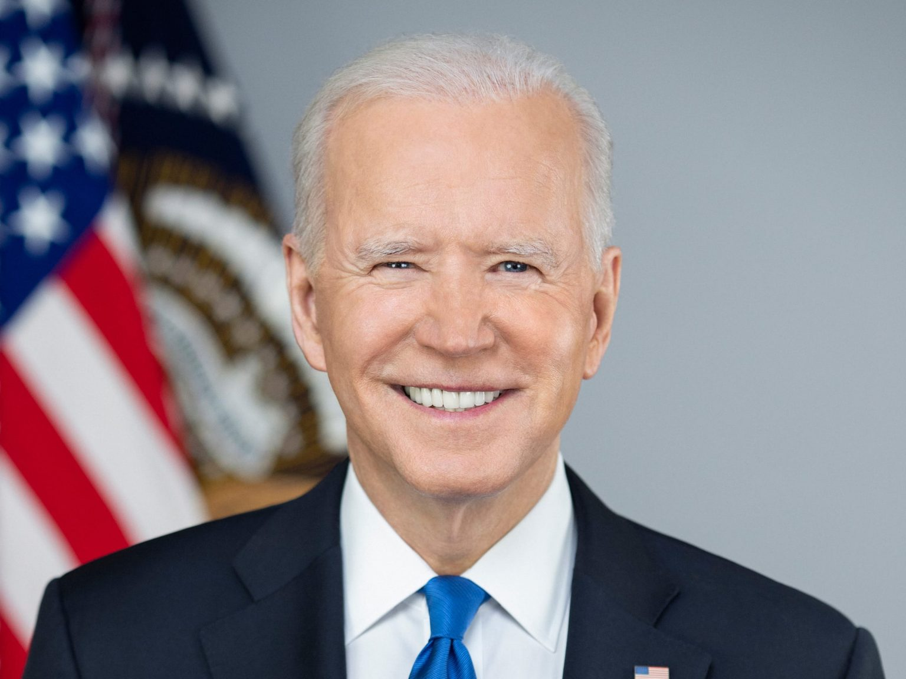

WELCOME TO INFORMATION WORLD

WORLD TOP FAMOUS PERSONS LIST
Dwayne Johnson
Dwayne Johnson, nicknamed “The Rock”, is the most famous person in the world as of 2022. Dwayne who was WWE champion wrestler earlier is now an actor and producer. He is one of the greatest professional wrestlers the game has ever witnessed. Dwayne Johnson is now one of the highest-grossing actors of Hollywood with an estimated net worth close to $320 million.
Joe Biden
Joe Biden, the 46th and current president of the United States is not only among the most famous personalities but also the most googled person of 2021. In the history of the United States of America, Joe Biden became the sixth youngest senator when he was just 30 years old. Biden who represents the democratic party served as 47th vice president of the United States for 8 years under the leadership of the Obama government. Biden defeated incumbent president Donald Trump in the 2020 high voltage presidential elections. Many famous celebrities like Taylor Swift and others came out in support of Biden and even compiled a song to support Biden.